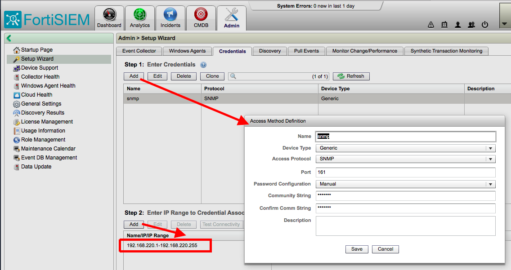
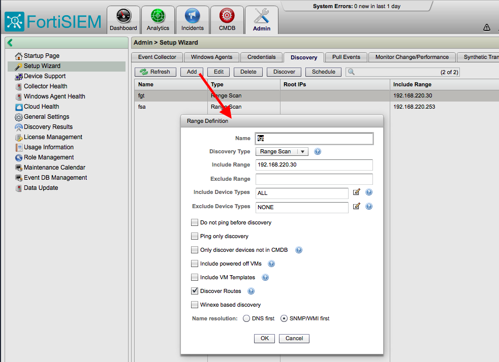
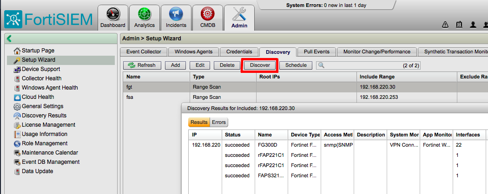
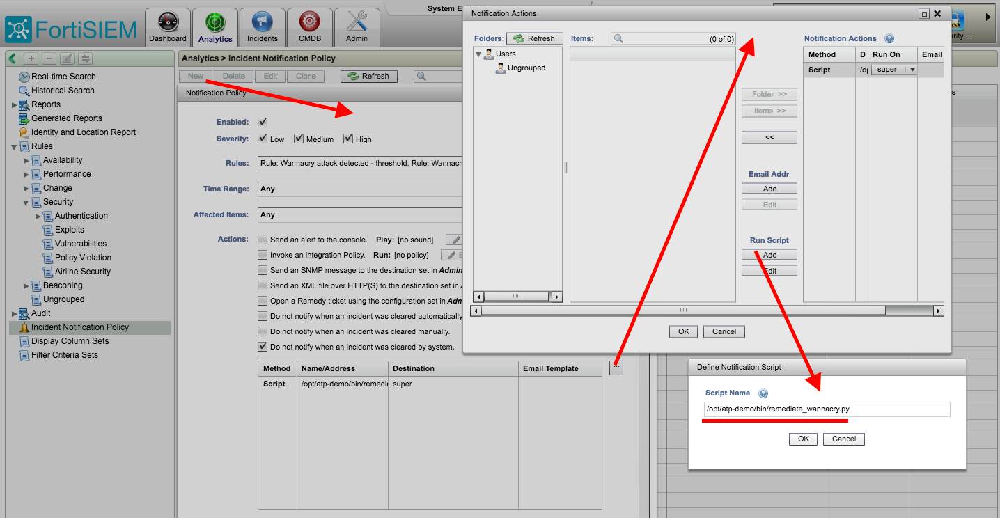

/opt.
git clone https://github.com/michal-kulakowski/atp-demo.gitbin directory is readable by everyone. If you want your files under /root, ececute chmod 755 /rootcd atp-demo./setup.shDefine SNMP credentials. Use any community string, discovery is going to run from disk anyway. Define Credential Associations.
Define IP ranges as shown below.
Run discovery for both IP addresses. Make sure you get results.
view rules.xmlAdd remediation script under Analytics > Incident Notification Policy for newly created rules
Make sure you specify absolute path reflecting script actual location.